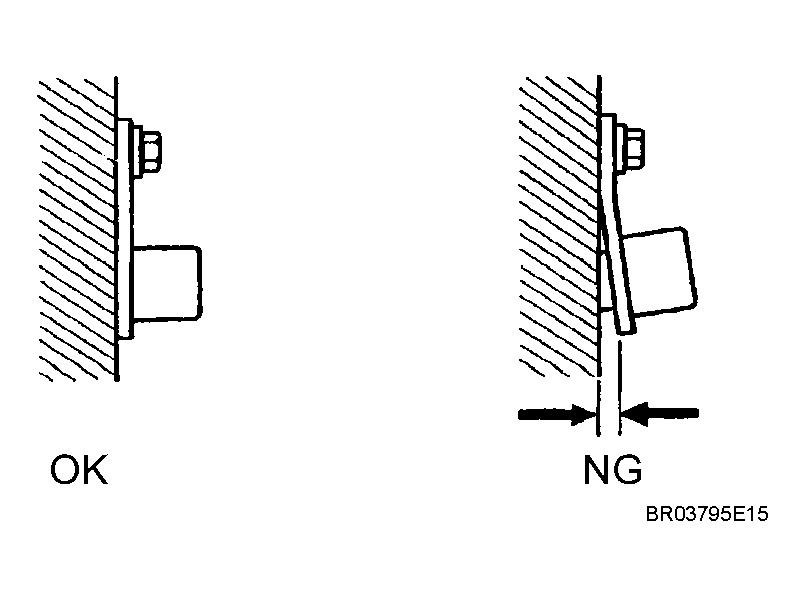

Inspection Procedure
WARNING: This page is about a different variant/trim than selected.
- INSPECT SPEED SENSOR NT (INSTALLATION)
- Check the speed sensor NT installation.
OK: Installation bolt is tightened properly and there is no clearance between the sensor and transaxle case.
NG: SECURELY INSTALL SPEED SENSOR OR REPLACE SPEED SENSOR

Courtesy of © TOYOTA, LICENSE AGREEMENT TMS1002OK: Go to Next Step
- Check the speed sensor NT installation.
- INSPECT SPEED SENSOR NT
- Disconnect the T2 sensor connector.
- Measure the resistance of the sensor.
Standard resistance
TESTER CONNECTION SPECIFIED CONDITIONTester Connection Condition Specified Condition 1 - 2 20°C (68°F) 560 to 680 Ω
NG: REPLACE SPEED SENSOR NT
OK: Go to Next Step
- CHECK WIRE HARNESS (SPEED SENSOR NT - ECM)
- Disconnect the E6 ECM connector.
- Measure the resistance of the wire harness side connector.
Standard resistance
TESTER CONNECTION SPECIFIED CONDITIONTester Connection Specified Condition E6-35 (NT+) - E6-27 (NT-) 560 to 680 Ω E6-35 (NT+) - Body ground 10 kΩ or higher E6-27 (NT-) - Body ground 10 kΩ or higher
NG: REPAIR OR REPLACE HARNESS AND CONNECTOR
OK: REPLACE ECM